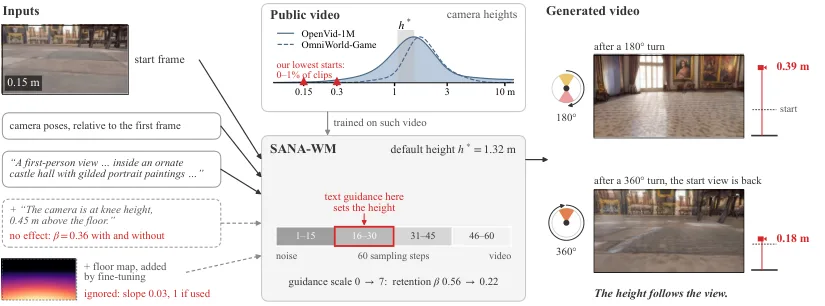
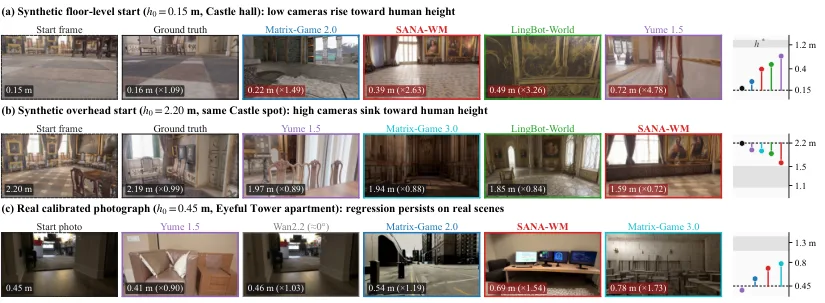
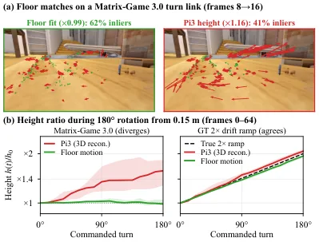
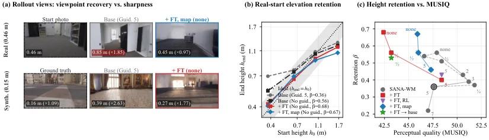

每个相机都会“长大”：交互式视频世界模型里的相机高度回归
Every Camera Grows Up: Camera-Height Regression in Interactive Video World Models
一句话：它把“世界模型能不能当某个本体的模拟器”变成一个可测的几何量——相机高度保持率 β，并证明现有模型会系统性地把视角拉回人眼高度。对我们最有用的不是结论本身，而是那套只用多视角重建 + 地面分割就能测高度的协议，可以直接拿来验收我们自己的仿真与生成管线。
height retention β
clips within 1.3×
path endpoint shift
作者、单位与技术谱系 · Research context
作者与单位
研究脉络
- π³ (Pi3)：Permutation-equivariant visual geometry learning测量基座关系：本文把 Pi3 当作尺度无关的多视角高度估计器：它一次重建每第 4 帧并输出共享全局尺度的点图，跨帧高度比因此可以抵消场景绝对尺度，这是 β 指标成立的前提。[论文 §3 测量协议]
- SANA-WM：Efficient minute-scale world modeling分析对象与缓解平台关系：SANA-WM 是本文机制分析与全部缓解实验的主模型：CFG 调度、LoRA 微调、floor-disparity 分支、RL 都只在它上面做，因此结论不外推到另外五个模型。[论文 §5–§6]
- 本篇推进：EyeHeight 基准与“几何劈开”诊断本篇推进关系：把“生成视频的 3D 一致性”这一泛化说法收窄为“是否保持起始相机高度”，并用地面单应与多视角重建的对比证明局部 2D 运动与 3D 尺度可以解耦。[论文 §1 贡献]
合作网络
- 南京大学软件新技术国家重点实验室署名组Sheng Lu → Ying Tai关系：共同署名[arXiv abs]
- Pi3 → EyeHeight 测量后端π³ (Pi3) → EyeHeight 高度测量关系：技术依赖[论文 §3]
- SANA-WM → 本文消融SANA-WM → 本文第 5–6 节干预实验关系：被评测/被微调模型[论文 §6]
作者、单位与通讯作者标注取自论文首页与脚注；技术谱系只记录论文明确写出的依赖（Pi3 作测量后端、SANA-WM 作干预平台），不推断导师或实验室内部关系。
方法本质拆解 · What actually changed
是不是训练了新模型？
评测部分完全不训练：六个模型都用官方权重与默认采样设置（Wan2.2 用 50 步中的 30 步）。唯一训练发生在缓解实验：在 7 个合成场景新渲染的 258 个起点（每个高度 42–44 个）上生成 81 帧真值转身，用 SANA-WM 自己的无引导 flow-matching 损失训练 rank-32 LoRA（自注意力、交叉注意力、相机层），只取第 1 个 epoch（64 步）；另外接了一段 DiffusionNFT 在线 RL（15 个 epoch，奖励来自 Pi3 的高度/俯仰/偏航误差）。
加了什么先验或约束？
评测阶段没有给模型加任何新约束，只是把轨迹限制在“水平平移 + 原地偏航”，从而在几何上保证真值高度与俯仰恒定。为了让模型“知道高度”，作者试了两种显式条件：在提示词里追加“相机在膝高 0.45 m”；以及微调一个零初始化的 Plücker 分支，把地平线以下像素的地面视差（下射角正弦除以相机高度）编码进去。两种都被模型基本忽略——后者的响应斜率只有 0.03（无引导 0.06），而忠实使用应为 1。
推理时做了什么？
推理侧没有任何优化或后端：一次前向生成 160 帧，评测只做后处理式测量——每 4 帧取一帧交给 Pi3 统一重建，分割地面后拟合平面得到高度曲线。缓解实验里的推理改动是采样调度：把文本 CFG 整段关闭，或推迟到 60 步去噪的后半程才以 scale 5 开启；不是新网络，也不是测试时优化。
方法本质是什么？
它做的是“诊断 + 归因”，不是提出新模型：用尺度无关的终点/起点高度比把“世界模型是否守住本体高度”变成一个可比较的标量，再用地面单应把局部 2D 运动与 3D 场景尺度分离，证明漂移来自新外绘区域的尺度先验而非视角遗忘。作者没有做的是：没有给出能同时保住高度与画质的训练方案（微调后 MUSIQ 掉 5.3），也没有解释为什么 2.2 m 这种在训练集中常见的高度仍会下沉。
输入是单张起始图 + 水平平移/原地偏航轨迹，改变的位置在“生成模型内部的场景尺度先验”，靠尺度无关的多视角高度比与地面单应把漂移量化，直接效果是把“世界模型能否模拟特定本体”变成可回归的数值指标。

桥接价值Bridge
桥接价值
我们评价一个重建或生成系统时，常用 PSNR/轨迹误差这类“平均正确性”指标，但它们对“视角是否属于某个特定本体”不敏感。这篇论文指出：起始图已经给出了本体的高度和俯仰，而模型在生成新内容时会把视角拉回人眼高度，这个偏差单靠视觉质量指标完全看不出来。对做具身仿真与合成数据的人来说，这意味着“看起来对”的 rollout 可能对应一个错误的传感器高度，而下游导航策略会因此改变路径。它的测量链条只依赖多视角几何和地面分割，不要求真值 3D，因此可以低成本地接到我们自己的数据上。
方法与模块Method
方法摘要
基准由两部分起点组成：Habitat-Sim 在 7 个室内场景（5 个 ReplicaCAD 公寓、1 个 Matterport3D 住宅、1 个城堡大厅）的 3 个开阔点位放置 6 个高度相机（0.15/0.3/0.6/1.0/1.6/2.2 m），得到 124 个针孔起点与 124 条前进、59 条转身的真值渲染；以及 Eyeful Tower 的 52 个标定实拍起点（13 个点位 × 4 档机架 0.36–1.72 m）。轨迹统一为水平平移与原地偏航：每帧 2.8° 转 64 帧（180°），再以每帧 1.5 cm 前进 96 帧（共 1.44 m），全程零垂直运动。高度测量用 Pi3 对每第 4 帧做一次共享全局尺度的多视角重建，用 ADE20K 训练的 SegFormer-B5 分出地面/地毯，对最低的水平稠密层拟合平面得到高度 h(t)，取末段 20% 的中位比 r=h(T)/h(0)，再以 h_end=h_0·r 还原绝对高度，场景尺度在比值中被抵消。
可迁移模块
第一是尺度无关的高度比指标本身：只要能重建出共享尺度的点图，“终点高度 / 起始高度”就不受场景绝对尺度影响，可以直接用于我们自己的仿真一致性回归测试。第二是交叉验证组合：Pi3 之外再用 VGGT（常高渲染上 β=1.03/1.01）、MoGe-2（实拍高度中位误差 3–9 cm）与无学习的地面单应（常高渲染误差 3% 内、漂移渲染 9% 内）互证，避免把某一个重建器的偏差当成被测模型的偏差。第三是“用真值场景按漂移位姿重渲染”的隔离手法：把相机位姿这一个变量单独改掉，再去跑下游策略，就能把“生成画质差”与“视角错”两种影响分开。

证据Evidence
关键证据与数字
在 180° 转身 + 前进脚本上，六个模型的保留率 β 为 0.18–0.67，而真值渲染是 0.95（Table 1，合成起点）；拟合出的默认高度 h* 全部落在 1.06–1.51 m。从 0.15 m 出发只有 0–20% 的片段终点在 1.3× 内：SANA-WM 0/21 且比值 ×5.47，Wan2.2 0/21 且 ×7.67，Matrix-Game 3.0 4/20、×2.03。高起点同样下沉，五个会旋转的模型把 2.2 m 压到 ×0.63–0.85。实拍起点上四个转过 100° 以上的模型全部回归，β 从 SANA-WM 的 0.36 到 Matrix-Game 3.0 的 0.79。地面单应与重建的一致性检验给出“几何劈开”的直接证据：Matrix-Game 2.0/3.0 的地面运动支持 ×1.00/×1.02，同一批片段 Pi3 却读出 ×1.31/×1.38（真值 ×1.03）。下游影响：七个导航策略的路径终点偏移 0.12–1.18 m，是测量噪声底的 1.6–6.2 倍，占生成视频本身造成偏移的 29–64%；单独看 GNM，按漂移后位姿重渲染就使终点移动 0.26 m，接近转身片段 0.28 m 的中位偏移。
边界与下一步Limits & Next Step
边界与风险
作者明确承认：生成 rollout 没有真值几何，主指标依赖可见地面，因此“片段不可重建”会被记为未保持高度（SANA-WM 在 0.15 m 的 21 条里只有 4 条可测，其余 17 条 Pi3 首帧找不到地面）；导航分析是开环的路径终点比较，闭环后果未测；缓解手段只在 SANA-WM 上做，因果流式模型的方案留待后续。我们需要自己核验的点：一是“公共视频里 0–1% 的近地视角”这一先验统计来自 OpenVid-1M 的 339/1500 条与 OmniWorld-Game 的 161/196 个场景，样本选择（必须有地面）可能本身就把低视角排除了；二是实拍行里 Yume 1.5 与 Wan2.2 几乎不转（77°/静止），其 β 不能与合成起点直接比较；三是“人眼高度”被拟合到 1.06–1.51 m 而非 1.6 m，是否与游戏/影视语料占比有关，文中未拆。
下一步实验
最直接的一步：用我们自己采集的一段室内序列，人工渲染 0.3 m 与 1.6 m 两个起点，喂给候选的生成/重建管线，按同样的 β 与终点高度比评测，看我们的管线是否也存在同向漂移。第二步：把地面单应这条无学习基线接进来，作为“局部几何是否自洽”的守门指标——当重建高度与单应高度分歧超过 10% 时报警，这比等下游任务掉点更早。第三步：如果要做缓解，优先试“前半程关闭文本引导 + 少量高度均衡数据”，并同时记录 MUSIQ 与 CLIP 相似度，因为作者已经证明这三者在同一批早期去噪步上耦合，不能只看保留率。



